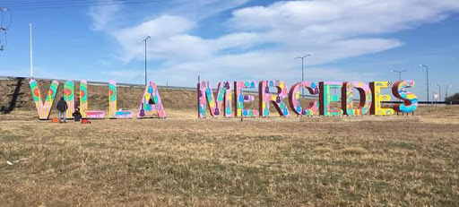
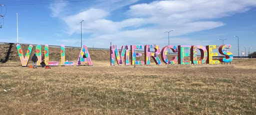
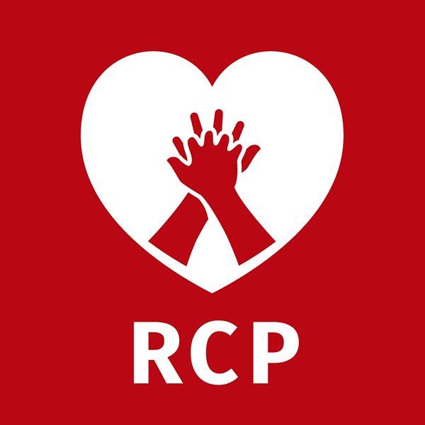
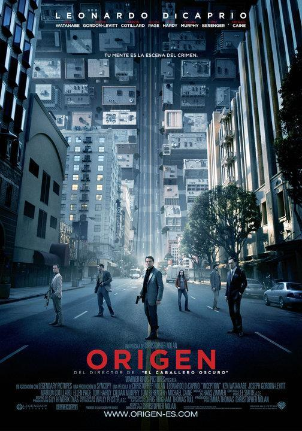

Bueno en primer lugar les voy a contar un poco sobre mi, me llamo Jael Nerea Reyes y tengo 20 años de edad.
Nací en Jujuy y me vine a vivir a Villa Mercedes cuando tenia 5 años y he vivido aqui desde entonces.
 

Asisti a la Escuela Tecnica N°18 Nicolasa Berrondo de Quiroga, complete mis siete años de estudio en esa escuela.
Despues de graduarme me inscribi a la Universidad de Villa Mercedes (Unvime) en la Escuela de Gestion de Empresas y Economia.
En estos momentos estoy cursando mi segundo año en la carrera de Diseño de Comunicación.
Siempre he sido alguien muy curiosa cuando algun tema me llega a interesar de gran manera y por esta misma razon trato de autocapacitarme de manera correcta.
He estado incursionando un poco en el mundo de photoshoop y la edicion de videos.
Tengo un poco de conocimiento en los programas como:
Uno de los conocimientos que adquiri durante la secundaria fue un curso de RCP gratuito que brindaron los profesores.
Me gustan diversas cosas como leer, escuchar musica o ver peliculas.
Algunos de mis libros favoritos son:Orgullo y Prejuicio de Jane Austen y las novelas de Sherlock Holmes de Arthur Conan Doyle


Y mis peliculas favoritas son: "La Cumbre Escarlata" y "El Origen"
Eso es todo lo que puedo decir de mi. Muchas gracias por llegar hasta aqui.